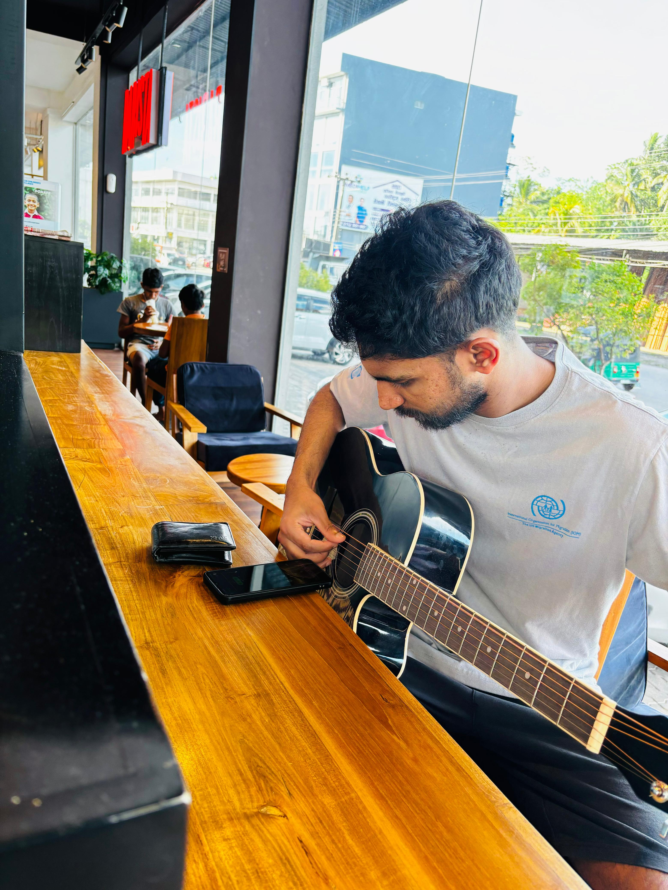

Sadisa Jayasuriya

Summary
Hi, I'm Sadisa. I'm willing to work in a challenging position with a growing organization where I can utilize my web development, programming,
technical, leadership and interpersonal skills to serve the organization and enhance the same.
Education
- Higher Diploma in Windows Administration - 2024 (TurnKey Campus - Bambalapitiya)
- Higher Diploma in Computer Hardware - 2024 (TurnKey Campus - Bambalapitiya)
- Certificate course in English (Diploma) at ESoft, Bambalapitiya
Work Experience
- Currently at the BPO company Legacy Healthcare as Executive - Operations (2023 - present)
- Worked at Urban Settlement Development Authority (USDA) as a Social Development Assistant. (Maintenance Officer, Transport Officer and IT technician) (2021 - 2023)
- Worked at the renowned BPO company GSS International as a Quality Assurance Technician - virtual job (2020 - 2021)
- Have experience in data entry for over five years
- Have worked on many freelancing platforms such as Freelancer, oDesk, People Per Hour
Contact Me